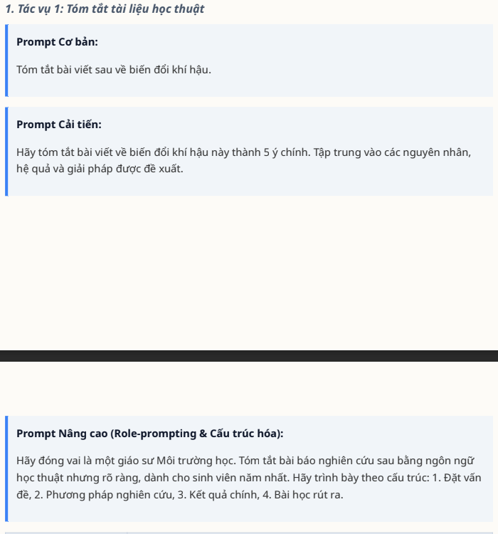
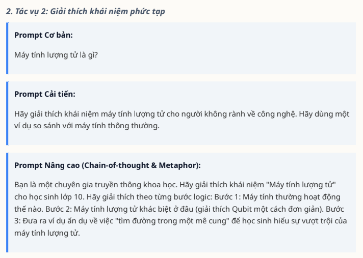
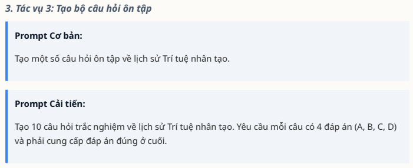
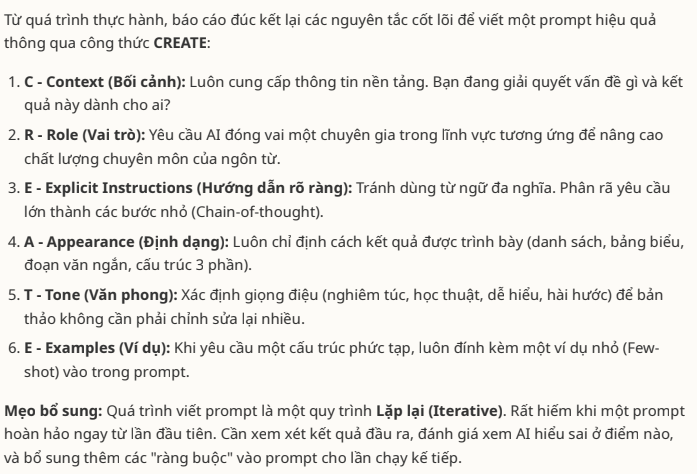

BÀI TẬP 3 - CHƯƠNG 3: TỔNG QUAN VỀ TRÍ TUỆ NHÂN TẠO
Viết prompt hiệu quả cho các tác vụ học tập
🎯 Mục tiêu bài tập
Phát triển kỹ năng tìm kiếm và đánh giá thông tin học thuật từ các nguồn đáng tin cậy.
📝 Quá trình thực hiện
1. Chọn 3 tác vụ học tập phổ biến
- Tóm tắt bài học ngữ pháp tiếng Anh: Thì hiện tại hoàn thành
- Giải thích khái niệm phức tạp: Ẩn dụ trong ngôn ngữ học
- Tạo câu hỏi ôn tập: Chủ đề “Từ loại tiếng Việt”
2. Phân tích 3 cấp độ Prompt
| Mức độ | Đặc điểm | Tác vụ 1 | Tác vụ 2 | Tác vụ 3 |
|---|---|---|---|---|
| Cơ bản | Ngắn gọn, chưa có hướng dẫn chi tiết. | "Tóm tắt nội dung về thì hiện tại hoàn thành." | "Giải thích khái niệm ẩn dụ trong ngôn ngữ học." | "Tạo một số câu hỏi ôn tập về từ loại tiếng Việt." |
| Cải tiến | Có thêm yêu cầu cụ thể về hình thức và độ dài. | "Hãy tóm tắt bài học về thì hiện tại hoàn thành trong tiếng Anh thành 3 gạch đầu dòng, tập trung vào cấu trúc và cách sử dụng." | "Giải thích khái niệm ẩn dụ trong ngôn ngữ học bằng ngôn ngữ dễ hiểu, kèm 1 ví dụ minh họa." | "Hãy tạo 5 câu hỏi trắc nghiệm về các từ loại trong tiếng Việt (danh từ, động từ, tính từ), kèm đáp án." |
| Nâng cao | Áp dụng kỹ thuật role prompting và few-shot example. | "Đóng vai giáo viên tiếng Anh, hãy tóm tắt bài học về thì hiện tại hoàn thành cho học sinh lớp 10. Viết ngắn gọn 3 ý chính và 1 ví dụ minh họa." | "Đóng vai giảng viên ngôn ngữ học, hãy giải thích khái niệm ẩn dụ một cách sinh động, có ví dụ từ văn học Việt Nam và tiếng Anh để so sánh." | "Đóng vai giáo viên tiếng Việt, hãy tạo 5 câu hỏi trắc nghiệm và 2 câu hỏi tự luận về từ loại, chia theo độ khó (dễ - trung bình - khó), kèm đáp án." |
3. Đánh giá kết quả thử nghiệm
- Prompt cơ bản: Nội dung thường đúng nhưng dễ dài, đôi khi lan man vì thiếu giới hạn và cấu trúc.
- Prompt cải tiến: Kết quả gọn gàng hơn, đúng trọng tâm, dễ ghi chú học tập.
- Prompt nâng cao: Hiệu quả nhất vì có vai trò + yêu cầu cụ thể, nội dung sinh động, phù hợp mục tiêu học tập/giảng dạy.
4. Tổng hợp mẹo viết Prompt hiệu quả
- Rõ ràng - cụ thể - có mục tiêu
- Thêm ngữ cảnh và vai trò (Role prompting)
- Giới hạn đầu ra (số câu, số ý, dạng gạch đầu dòng...)
- Cho ví dụ mẫu hoặc hướng dẫn (few-shot prompting)
- Thử nghiệm - đánh giá - điều chỉnh
📸 Minh chứng hội thoại thực tế
Tác vụ 1:


Tác vụ 2:


Tác vụ 3:


Nguyên tắc và mẹo viết prompt:
